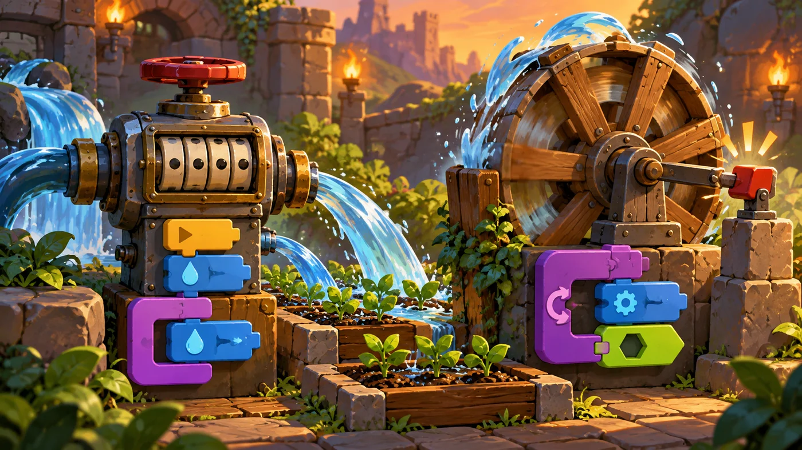
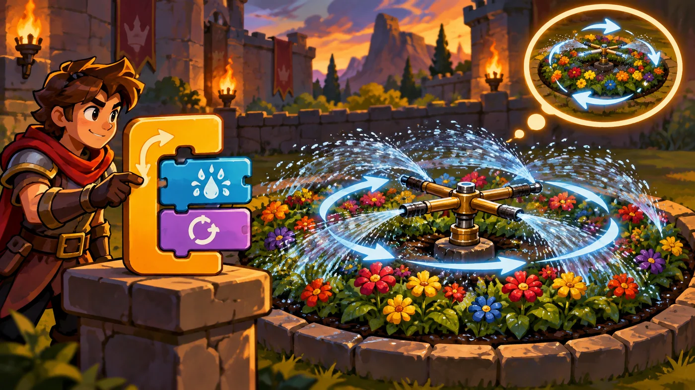

扣哒考级 · GESP 图形化 一级 · 第 7 单元 | 积木花园 BLOCKBLOOM GARDEN
循环灌溉器 循环结构：重复执行
Loops: Repeat

安雅
红发队长 · 你的旅伴
花圃的尽头立着一台高高的灌溉器。它不像你想的那样一瓢一瓢浇——它只是
转了一圈又一圈，每一圈都重复着同样的动作。
你数着它转过的圈数，忽然明白了：它做的事和你写八遍积木做的事一模一样， 只是它从不嫌烦。
你数着它转过的圈数，忽然明白了：它做的事和你写八遍积木做的事一模一样， 只是它从不嫌烦。
安雅 · 红发队长
循环是三种结构里最省事的一个——把重复的活儿全丢给它去数。这一单元记住两件事：三种循环积木怎么选、口里的积木一共执行几次。 考试最爱拿这两条出题。
0 单元导语与目标
Before We Start
0.1 学习目标
- 理解循环结构：同一段积木重复做很多遍；
- 会区分重复执行 10 次、一直重复、重复执行直到三块积木；
- 会用"循环 + 移动 + 转向"画出正方形、正多边形等规则图形；
- 会把判断放进循环里，写出"一遍遍检查"的效果；
- 知道什么时候该用循环、什么时候该用分支。
0.2 考纲对照
| 考纲知识块 | 考纲要求 | 本单元小节 |
|---|---|---|
| 4 三大基本结构 | 循环结构 | 1.1～1.3、2.1～2.3 |
| 6 角色的操作 | 移动、旋转配合循环做规则图形 | 3.1、3.2 |
| 8 侦测与控制 | 把判断放进循环里，一遍遍检查 | 4.1 |
循环是三大结构里最"省事"的一个——它能把二十块积木的活儿压成两块。' '一级卷子里问"这段脚本执行了几次"的题，考的就是循环。
1 为什么要循环
Why Loops
1.1 重复的代码太长
花园的灌溉器要绕着环形花bed浇一圈接一圈。如果一瓢一瓢写下去，脚本会长得吓人：
图 1（SVG）：不用循环 vs 用循环
1.2 重复执行 10 次
这就是循环的基本积木。它的形状是一个 C：下面那个口里放要重复的积木，' '上面那个白框里填重复几次。
重点示例：把重复交给机器
图形化积木
读法 口里的两块积木会被完整地执行 8 遍，一共说了 8 次、走了 8 步
1.3 循环替你数圈数
打个比方：循环就像操场跑圈——你只告诉教练"跑 8 圈"，剩下数圈的事他自己会干。你写一遍动作，循环替你数遍数。
考卷上最爱问的一句："这段脚本一共执行了几次？"——把循环次数乘上口里的积木数，就是总次数。如果循环里还有循环，就把两层的次数相乘。
2 三种循环积木
Three Kinds of Loops
2.1 重复执行 10 次
次数提前知道时用它。数字可以改成任意正整数。
图 2（SVG）：三块循环积木
2.2 一直重复
重点示例：让它一直转下去
图形化积木
要点 口里的积木一轮接一轮无穷无尽，直到你点红色停止按钮——这就是那个"永远转个不停的循环风车"

assets/illustrations/scratch-L1-07-02_repeat_vs_forever.webp
【配图位】两台并排的园艺机器——一台带计数表盘的定量水泵，一台一直转到碰到开关才停的循环风车。（提示词见《GESP配图清单与AI绘图提示词》第四节 1-7）
2.3 重复执行直到
次数不知道、但知道什么时候该停时用它。条件放在底部那个六边形槽里， 而且——每转一圈就检查一次。
重点示例：浇到土湿为止
图形化积木
要点 先判断条件：成立就立刻跳出循环；不成立就做一遍口里的积木，做完再回来判断
一句话记住区别：重复执行 10 次——数够次数就停；
一直重复——永远不停；
重复执行直到——条件一成立就停。
一直重复——永远不停；
重复执行直到——条件一成立就停。
3 循环加移动：画出图形
Drawing with Loops
3.1 让角色一圈圈走

assets/illustrations/scratch-L1-07-01_sprinkler_loop.webp
【配图位】旋转灌溉器一圈圈浇灌同一片环形花bed，留出圆形虚线轨迹，旁边有一枚显示重复次数的徽章。（提示词见《GESP配图清单与AI绘图提示词》第四节 1-7）
重点示例：绕着一个圆走
图形化积木
要点 每次都走一小步、转一小下；36 次 × 10 度 = 360 度，正好绕回原处，于是走出来一个圆
3.2 画正多边形
图 5（SVG）：正多边形的画法
重点示例：画一个正方形
图形化积木
要点 角度有个规律：每次转的角度 = 360 ÷ 边数。正方形 360 ÷ 4 = 90 度，正六边形 360 ÷ 6 = 60 度
打个比方：走正方形就像在操场上沿着跑道走——直走一段，拐个直角，一共拐四次，自然回到起点。拐不够四次，就画不成闭合的方框。
4 循环与分支配合
Loops Meet Conditions
4.1 边转边判断
把上一单元的"如果……那么"塞进循环里，就得到了"一遍遍检查"的能力。
重点示例：一直走，遇到红墙就转向
图形化积木
读法 每走一小步就检查一次颜色——碰到红墙立刻转向，然后继续往前走
4.2 什么时候用哪种循环
图 6（SVG）：三种循环怎么选
一块积木顶二十块：第 5 单元的"徒步旅行者"其实就是"重复执行 2 次"能搞定的事；第 1 单元"宝石方块"绕的那一圈，也就是"重复执行 4 次 + 右转 90 度"。学会循环之后，回头看那些关，脚本能短一大截。
5 代码实战
Level Practice
这一关是循环的启蒙关：同一组动作重复四遍，路就自己走出来了。
关卡 65
循环的
进入关卡 →
故事：
花径铺成了一条折线楼梯：往上一格、往右一格、再往上一格、再往右一格……
这样的组合一共要走上四遍才到终点。一格一格写出来太难看了——
这一关就是让你第一次尝到循环的甜头。
思路：动作只有两块积木：向上移动一格、向右移动一格。 既然要重复四遍，就把这两块塞进"重复执行 4 次"的口里——脚本一下就短了。
重点示例：两块积木，走完四段路
图形化积木
读法 口里的四块积木是一"套"动作；重复执行 4 次，就是把这套动作做了 4 遍
自己试一试：把"4 次"改成"2 次"，角色就会在半路停下——体会一下：改一个数字，就能控制走多远。
这一关的骨架——"帽子块 + 重复执行 + 一套动作"——' 几乎是一级作品的标准写法。第 1 单元的"宝石方块"用循环重写一遍，' 积木能少掉一大半。
回头看看第 6 单元那一关："重复执行 6 次"里套着两个"如果……那么"——循环负责"做几遍"，分支负责"每遍怎么做"，两者配合才是完整的程序。
去扣哒世界闯这一关 →
6 常见陷阱
Common Traps
陷阱 1：把该放进循环口的积木放在了循环外面。循环口里的会重复，口外的只做一次。
正确做法：拖积木时把鼠标对准"口"的位置松开，积木会自动缩进一格，那才说明它进循环了。
正确做法：拖积木时把鼠标对准"口"的位置松开，积木会自动缩进一格，那才说明它进循环了。
陷阱 2：把循环次数当"动作数"。"重复执行 4 次"里放着 3 块积木，一共执行的是 4 × 3 = 12 块次。
正确做法：先数清口里有几块，再乘次数。
正确做法：先数清口里有几块，再乘次数。
陷阱 3：用"一直重复"却忘了给它停下来的办法。脚本会永远转下去，后面的积木永远等不到执行。
正确做法：要么改用"重复执行 N 次"，要么在循环里放好"重复执行直到某个条件"或在需要时用"停止"积木。
正确做法：要么改用"重复执行 N 次"，要么在循环里放好"重复执行直到某个条件"或在需要时用"停止"积木。
陷阱 4：把"如果……那么"放在循环外面。那样它只检查一次，而不是"一遍遍检查"。
正确做法：要持续盯着，就把判断放在循环里面。
正确做法：要持续盯着，就把判断放在循环里面。
7 题目练习
Practice
第 1 题改编自 2026 年 9 月 · 图形化编程 一级 编程题 第 1 题的功能要求，其余为原创练习题。
改编自 2026 年 9 月 · 图形化编程 一 级 · 编程题 5单选题
"星光之旅"的功能要求里写着：敞篷车每隔 0.2 秒移动 10 步，直到碰到舞台边缘为止；碰到边缘回到起点后，再"每隔 0.2 秒移动 10 步，一共重复执行 18 次"。
这两句话分别对应哪种循环（ ）。
这两句话分别对应哪种循环（ ）。
A.两句都用"重复执行 18 次"
B.前一句用"重复执行直到 碰到舞台边缘？"，后一句用"重复执行 18 次"
C.前一句用"一直重复"，后一句用"重复执行直到"
D.两句都用"一直重复"
B.前一句用"重复执行直到 碰到舞台边缘？"，后一句用"重复执行 18 次"
C.前一句用"一直重复"，后一句用"重复执行直到"
D.两句都用"一直重复"
查看答案与详解
答案：B。关键在两句的"说法"不一样：
· "直到……为止"——次数说不准，只知道什么时候停 → 用重复执行直到；
· "一共重复执行 18 次"——次数写死了 → 用重复执行 18 次。
A 错：前一句若写成 18 次，敞篷车可能没走到边缘就停下；
C 错：反过来了，而且"一直重复"永远不会自己停；
D 错：两句都不该用"一直重复"。
对应小节2.1、2.3 三块循环积木怎么选。
· "直到……为止"——次数说不准，只知道什么时候停 → 用重复执行直到；
· "一共重复执行 18 次"——次数写死了 → 用重复执行 18 次。
A 错：前一句若写成 18 次，敞篷车可能没走到边缘就停下；
C 错：反过来了，而且"一直重复"永远不会自己停；
D 错：两句都不该用"一直重复"。
对应小节2.1、2.3 三块循环积木怎么选。
原创练习题单选题
下面这段脚本执行完后，角色一共移动了多少步（ ）。
当绿旗被点击 → 重复执行 5 次：{ 移动 10 步；右转 90 度 }
当绿旗被点击 → 重复执行 5 次：{ 移动 10 步；右转 90 度 }
A.10 步
B.50 步
C.5 步
D.100 步
B.50 步
C.5 步
D.100 步
查看答案与详解
答案：B。口里的两块积木会被完整执行 5 遍，所以"移动 10 步"一共做了 5 次：5 × 10 = 50 步。
易错点：别把"转 90 度"也算成移动——它只改朝向，位置不动。
对应小节2.1 重复执行 10 次。
易错点：别把"转 90 度"也算成移动——它只改朝向，位置不动。
对应小节2.1 重复执行 10 次。
原创练习题单选题
要让角色画出一个正六边形，循环里每次应该右转多少度（ ）。
A.30 度
B.45 度
C.60 度
D.90 度
B.45 度
C.60 度
D.90 度
查看答案与详解
答案：C。画正多边形有个规律：每次转的角度 = 360 ÷ 边数。正六边形：360 ÷ 6 = 60 度，同时要重复 6 次。
A 错：30 度 × 12 次才是 360 度，那会画出正十二边形；
B 错：45 度对应正八边形；
D 错：90 度对应正方形（重复 4 次）。
对应小节3.2 画正多边形。
A 错：30 度 × 12 次才是 360 度，那会画出正十二边形；
B 错：45 度对应正八边形；
D 错：90 度对应正方形（重复 4 次）。
对应小节3.2 画正多边形。
原创练习题单选题
"重复执行直到 碰到舞台边缘？"这块积木，什么时候会停下来（ ）。
A.做满 10 次之后
B.条件一成立就立刻停
C.永远不会停
D.点绿旗之后立刻停
B.条件一成立就立刻停
C.永远不会停
D.点绿旗之后立刻停
查看答案与详解
答案：B。"重复执行直到"每转一圈就检查一次条件，条件一成立立刻跳出循环，接着执行下面的积木。
A 错：它的参数是条件，不是次数；
C 错：那是"一直重复"的特点；
D 错：它得先把条件判断一遍，条件不成立就先做一遍口里的积木。
对应小节2.3 重复执行直到。
A 错：它的参数是条件，不是次数；
C 错：那是"一直重复"的特点；
D 错：它得先把条件判断一遍，条件不成立就先做一遍口里的积木。
对应小节2.3 重复执行直到。
原创练习题多选题
下面哪些说法是正确的（ ）。
A."重复执行 10 次"里的积木一共执行 10 遍
B."一直重复"里的积木会一轮接一轮执行下去
C.把"如果……那么"放进循环里，就能一遍遍检查条件
D.循环和分支不能同时使用
B."一直重复"里的积木会一轮接一轮执行下去
C.把"如果……那么"放进循环里，就能一遍遍检查条件
D.循环和分支不能同时使用
查看答案与详解
答案：A、B、C。这三条正是循环结构的三个要点。
D 错：循环和分支不仅能一起用，还常常一起用——"重复执行里套如果……那么"就是最典型的搭配，第 6 单元那一关就是这么写的。
对应小节2.1～2.3、4.1 循环与分支配合。
D 错：循环和分支不仅能一起用，还常常一起用——"重复执行里套如果……那么"就是最典型的搭配，第 6 单元那一关就是这么写的。
对应小节2.1～2.3、4.1 循环与分支配合。
原创练习题判断题
在图形化编程中，"重复执行 3 次"的口里放了 4 块积木，这些积木一共会被执行 12 次。（ ）
查看答案与详解
答案：正确（√）。循环会把口里的积木整组执行指定的遍数：4 块 × 3 遍 = 12 块次。
审题时要注意"一共执行几次"和"循环几遍"是两个数，考试最爱在这里设陷阱。
对应小节1.3 循环替你数圈数。
审题时要注意"一共执行几次"和"循环几遍"是两个数，考试最爱在这里设陷阱。
对应小节1.3 循环替你数圈数。
8 本单元小结
Unit Summary

塔林 · 花园的守门人
到这儿，一级的三大基本结构你就全认齐了：顺序、分支、循环。
记住循环的三种写法，再记住"每次转的角度 = 360 ÷ 边数"——
一级卷子里的循环题基本跑不出这两条。
你在灌溉器旁学到了什么
- 三种循环：重复执行 N 次、一直重复、重复执行直到（条件成立就停）；
- 执行次数：口里的积木数 × 循环遍数；两层循环就把次数相乘；
- 循环画图：重复 N 次、每次转 360 ÷ N 度，就能画出正 N 边形；
- 循环 + 分支：把"如果……那么"放进循环里，就能一遍遍检查；
- 三大结构认齐了：顺序（一块块往下）、分支（看情况选路）、循环（重复很多遍）。
下一站：彩虹集市
积木花园的一级冒险到这里就结束了。你已经会用顺序、分支、循环写出完整的作品。
下一站是彩虹集市——那里有网络、有流程图、有克隆和画笔，
还有会喊话的广播塔。二级的大门即将打开。